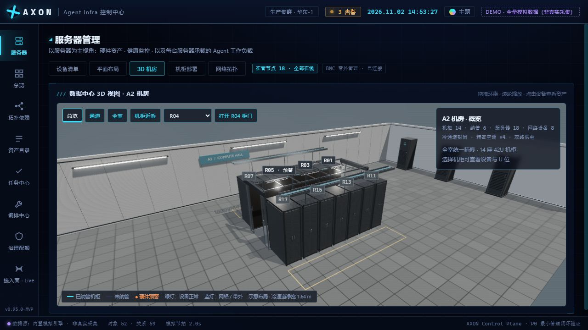
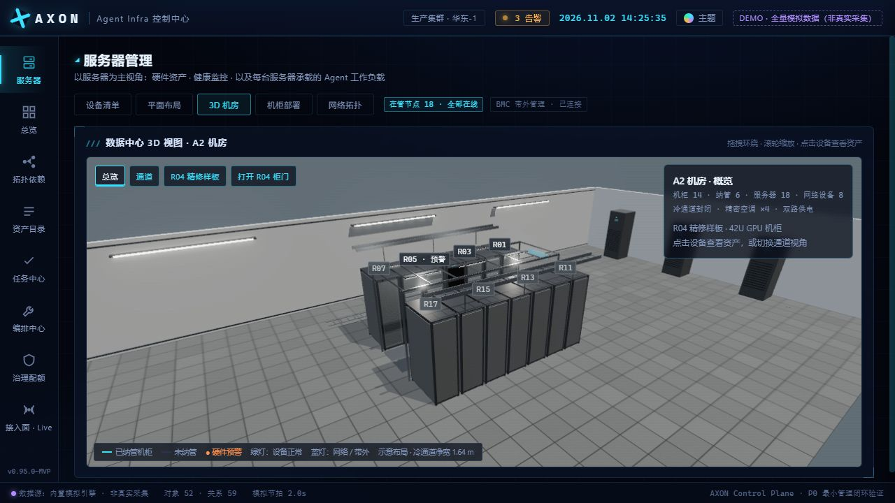
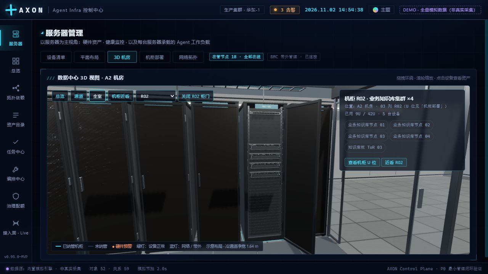

A2 机房 · 整室精修前后对比
从 R04 样板推广到整个机房：14 座机柜、26 台设备、完整通道与维护区。截图来自实际浏览器 WebGL 渲染；每组使用相同镜头、FOV 与画布尺寸。


改造前改造后
统一精修
- 14 柜：独立网孔门、导轨、U 位刻度、铭牌、后门与 PDU。
- 26 台设备：托盘、拉手、接口、紧固件，保留原有 ID 与 U 位。
- 通道两端门框、穿孔地板、桥架与线缆、维护区标线、灯具与墙板。
交互与性能
- 总览 / 通道 / 全室 / 逐柜近看，前后排正确切换。
- 设备直达资产、机柜 U 位跳转、告警与八套主题保持可用。
- 重复几何共享、远近细节切换、静态阴影复用与按需渲染。
“推广前”是上一阶段已完成基础校准和 R04 样板的版本。两版使用相同镜头、FOV 与画布尺寸。总览和全室采用顶部剖切，通道保留顶盖；截图均为实际 WebGL 渲染。未修改业务数据库。查看性能和验收记录 · 打开实时机房

R02 近看：精修已从 GPU 样板推广到其他设备类型与机柜。